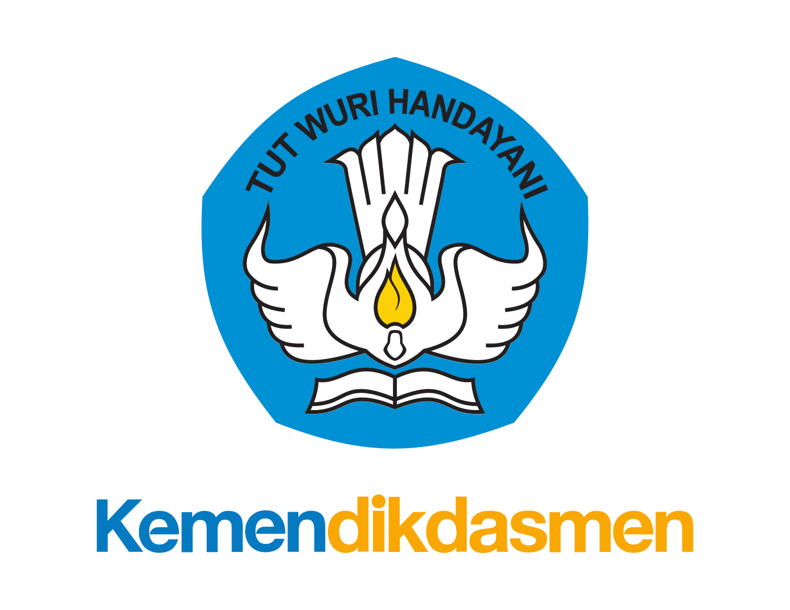
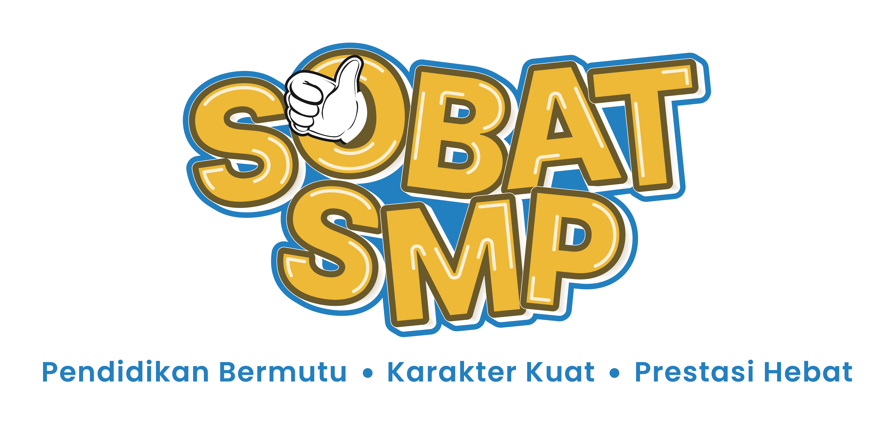
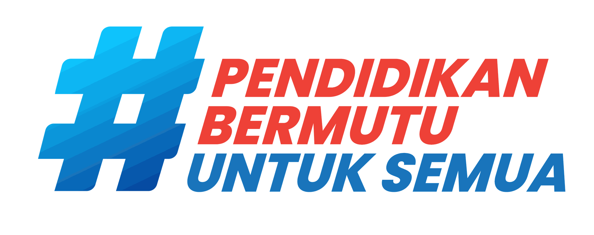
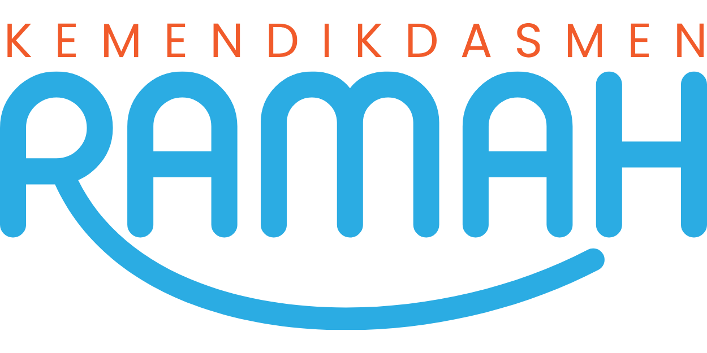
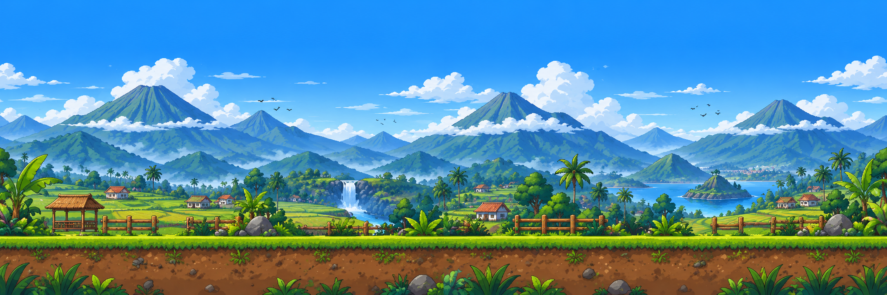
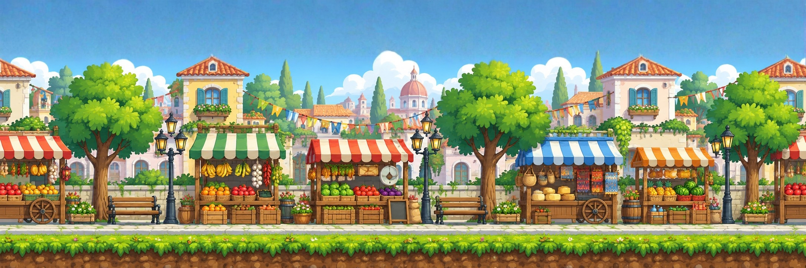
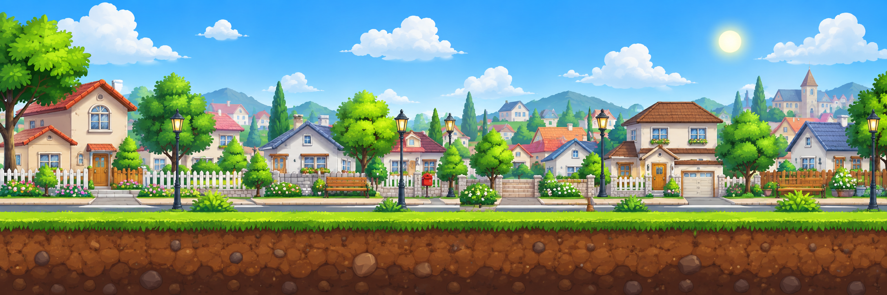
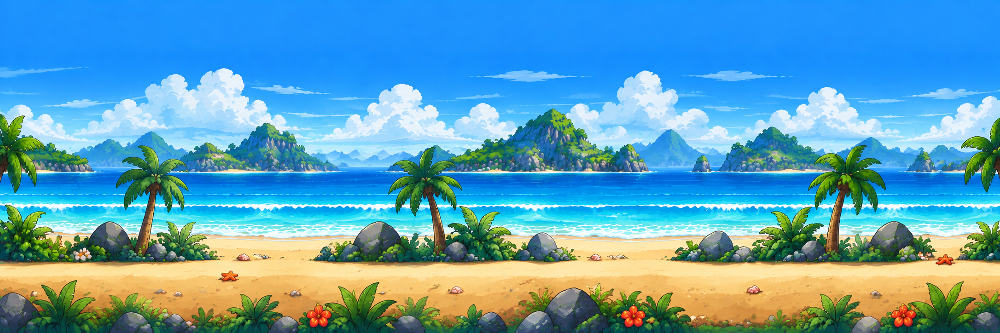

JELAJAH IPS
Memuat dunia petualangan edukatif...
Menyiapkan Permainan ...
0%
Mohon tunggu sebentar. Karakter, level, dan peta petualangan sedang dipersiapkan.
VIDEO COVER • assets/cover/cover_artwork.mp4




▶
Sebelum Petualangan Dimulai...
Mari kita lihat video apersepsi materi sebelum memulai permainan. Amati bagaimana kehidupan masyarakat dan kondisi lingkungan di berbagai wilayah saling berhubungan.
VIDEO APERSEPSI
assets/video/apersepsi.mp4
assets/video/apersepsi.mp4
Pilih Mode Petualangan
Pilih cara bermain. Mode 2 pemain terbuka setelah Mode 1 pemain berhasil menamatkan seluruh Level 1–5.
Mode 1 Pemain
Petualangan Individu
Jelajahi seluruh peta, selesaikan tantangan, kumpulkan skor tertinggi di Papan Peringkat Terbaik, dan buka Mode 2 Pemain.
TERSEDIAMode 2 Pemain
Bermain Bersama Teman
Berlomba bersama teman dengan layar terbagi dua, dua analog, dan soal acak yang berbeda untuk tiap pemain.
🔒 TERKUNCIMasukkan Nama
Nama akan digunakan untuk hasil petualangan dan Peringkat Terbaik.
Pilih Penjelajah Mode 2 Pemain
Kedua pemain berada di dunia Integrasi 4 Wilayah yang sama. Pilih karakter untuk masing-masing pemain.
Pemain 1
Pemain 2
P1
-
-
Darah
♥♥♥♥♥
♥♥♥♥♥
Jawaban
0 benar
0 benar
SUDAH FINISH
ANALOG P1
Tantangan P1
P2
-
-
Darah
♥♥♥♥♥
♥♥♥♥♥
Jawaban
0 benar
0 benar
SUDAH FINISH
ANALOG P2
Tantangan P2
Mode 2 Pemain • Integrasi 4 Wilayah
Kalian berlomba di dunia yang sama dengan 10 kotak tantangan: 5 pertanyaan, 2 sebab–akibat, dan 3 drag & drop. Soal tiap pemain berbeda dan diacak kembali saat pertandingan baru. Karakter lawan atau indikator arahnya terlihat di layar masing-masing.
⚡ Cepat & Tepat Menjawab
Jawaban yang benar dan semakin cepat mendapat poin lebih besar. Satu kotak boleh dibuka berulang, tetapi skor unik hanya diberikan sekali untuk setiap kotak.
🏁 Cepat Sampai Finish
Pemain yang lebih dulu tiba di finish memperoleh bonus kecepatan lebih besar. Pertandingan baru berakhir setelah kedua pemain mencapai finish.
♥ Pertahankan Nyawa
Hindari tikus, anjing, babi hutan, dan buaya. Jawaban salah atau waktu habis juga mengurangi darah.
Penentuan Juara: gabungan poin jawaban benar/cepat, bonus urutan finish, dan sisa darah. Jika skor akhir sama, pemain yang lebih dulu sampai finish menjadi pemenang.
3
Selamat, Pertandingan Selesai!
| Peringkat | Pemain | Jawaban | Waktu Finish | Darah | Skor Akhir |
|---|
Panduan Permainan
Kamu dapat memakai analog virtual, keyboard, atau langsung menyentuh area di sekitar karakter.
Kontrol A • Analog Virtual
Geser analog di pojok kiri bawah. Kiri/kanan untuk berjalan, geser ke atas untuk melompat, dan arah diagonal atas untuk lompat sambil bergerak.
✦
Keyboard tetap aktif: A/D atau ←/→ untuk bergerak. W, ↑, atau Space untuk melompat.
Naiki crate
Hindari hewan
Sundul kotak ?
Kontrol B • Sentuhan Langsung
Sentuhan dekat posisi karakter di layar.
LOMPAT
KE KIRI
KE KIRI
LOMPAT
KE KANAN
KE KANAN
JALAN
KE KIRI
KE KIRI
JALAN
KE KANAN
KE KANAN
Sentuh kanan-atas karakter untuk lompat ke kanan, atau kiri-atas untuk lompat ke kiri.
VIDEO PETA • assets/backgrounds/videopeta.mp4
!
Informasi
🏆
Selamat! Petualanganmu Selesai!
Sertifikat Penyelesaian Jelajah IPS
Peta Integrasi Antarruang
Empat lingkungan kini menjadi satu. Selesaikan seluruh 14 titik untuk menutup petualangan.
Informasi0/3
Observasi0/3
Sebab-Akibat0/3
Soal Acak0/5

⛰ Pegunungan
🛒 Pasar
🏠 Perumahan
🌊 Pesisir
Informasi
Observasi
Sebab-akibat
Soal 15 detik
Misi Lokasi
Perumahan
Aturan: Sundul semua kotak di atas untuk membuka pengetahuan dan pertanyaan. Jawaban salah dan terkena hewan akan mengurangi nyawa.
Tantangan
🏅
Misi Integrasi Selesai!
3/3Informasi
3/3Observasi
3/3Sebab-Akibat
0/5Soal Acak
Kesimpulan: kondisi lingkungan memengaruhi kehidupan masyarakat, sedangkan pergerakan manusia dan barang membuat berbagai ruang saling terhubung. Perubahan pada satu wilayah dapat menimbulkan dampak pada wilayah lain.
Ani
Pegunungan
Pegunungan
Darah
♥♥♥♥♥
♥♥♥♥♥
Jarak 0 m
Tujuan 0%
Tujuan 0%
Kotak ?
0/3
0/3
GERAK • ATAS = LOMPAT
Alternatif: sentuh kiri/kanan karakter • area atas = lompat
Tantangan IPS
15
🏁
Petualangan Selesai!
Kamu berhasil mencapai tujuan.
Ⅱ
Permainan Dijeda
Pilih menu berikut atau lanjutkan petualanganmu.
Level 1 • Perumahan
Selamat Datang
1/3
Misi
Tantangan Lingkungan
🏁
Misi Perumahan Selesai
Petualangan Berhasil!
⚠️
Misi Belum Lengkap
Selesaikan Semua Tantangan
Hasil Petualangan
Skor Petualangan
0Skor Utama
0Jawaban Benar
0Salah / Timeout
00:00Waktu Petualangan
0Jumlah Mati
♥♥♥♥♥Darah Tersisa
-Rata-rata Jawaban Benar
0%Akurasi Tantangan
0Total Darah Hilang
0/40Kecepatan menyelesaikan level
0/40Benar & cepat menjawab
0/20Ketahanan darah
Yang perlu diperhatikan
💔
Darah Kamu Habis
Level 2 • Pasar
Selamat Datang di Pasar
1/3
🏁
Misi Pasar Selesai
Petualangan Berhasil!
Level 3 • Pegunungan
Selamat Datang di Pegunungan
1/3
🏁
Misi Pegunungan Selesai
Petualangan Berhasil!
Level 4 • Pesisir
Selamat Datang di Pesisir
1/3
🏁
Misi Pesisir Selesai
Petualangan Berhasil!
Level 5 • Integrasi Empat Ruang
Misi Integrasi Dimulai
1/3
🌍
Misi Integrasi Selesai